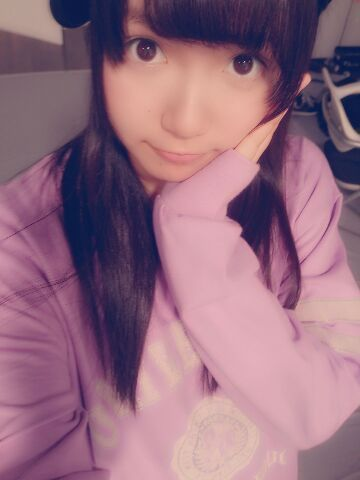

| 2013/12 07 Sat | ひめたん(*>ω<*)そ の377 |
テスト終わりました∩^^∩ばほーい
今日から日記も通常営業じゃーい！

ブレブレいくちゃん。とひめたん。
12/6発売 GiRLPOP 2014 WINTER
みおちゃん、みさみさ、川後さんと
４人で載ってます＊
写真もインタビューもあって
楽しい感じになってますよー
ぜひチェックしてみてくださーい♪♪
さて、明日から
7thシングル全国握手会が始まります！
一カ月半ぶりの握手会とゆーことで
ロックの学園以来のライブとゆーことで
ひめたんはもう楽しみにしてました*\(^o^)/*
ライブ初披露の曲いっぱいあるので
はやくパフォーマンスしたいなー
あっ会場はきっと寒いと思うから
防寒対策はバッチリしてきてねー
とにかく風邪ひいたーとかゆー
悲しいことにはならんよう頼みます
ひめたん泣くよーこれまじだよー
そんなひめたんは
マフラーのいい感じの巻き方を
研究したい年頃です
最近やってるのは
ぐるぐる巻きつけない！
ラフに首にかけるだけって感じです
様になってるかどうかはわからぬ(〃ω〃)
例年よくやるのはそのままりぼん結びかな
何かステキなのがあったら
ぜひひめたんに教えてくださーい♪♪

生写真「スウェット」
万理華、ねねころ、玲香と
お話しながら帰ったんだが
まー楽しかった( ´ ▽ ` )ノ♪

 個人ＰＶの予告見たよー！
個人ＰＶの予告見たよー！
もしかしてひめたんは鳥になったのかな？笑
鳥さんにはなれなかったかなー(´・ω・｀)
でもねっでもでも飛行機なんかよりも
パラグライダーの方が
感覚は近いかも！
空を飛べたなら次は
バンジージャンプも出来るね笑
やっぱり怖さとか全然違うのかな？
うちにはバンジージャンプのプロがいるので
バンジーの依頼は譲ります←
えってかっパラグライダーはっ
まず怖くないっ怖くないよ！
高いの平気なん？
高所恐怖症とかゆーわけではないけど
さすがにあの絶壁に立ったときは
ちょっと足がすくみました。
んーまあー何より安全だからね( ∀ )
今年は
インフルエンザの予防接種打ちましたか？
打ちました◎
ひめたん注射は意外と怖くないタイプの人よー
これで安心してライブリハも練習できるねー
みなさんも打ってね？
インフルかかったらつらたんだよー？
武道館のモバイル会員の先行の抽選
落ちたんだけど、
ひめたんビームでなんとかできないかな？
ひめたんびーむでどうにかなったら
その抽選はきっとあかんやつや。
でも、ほら、そのーね、
ひめたんびーむってやってみて？
ちょっと元気になれるでしょ？
なったでしょ( ^ω^ )あん？
 くわいの時期だね！くわいは好き？
くわいの時期だね！くわいは好き？
くわい好きー＊
くわいのからあげってやつが
給食に出てきてましたよー懐かしやー
コーヒー飲むなら
ブラックor砂糖のみorミルクのみ
or砂糖とミルク両方のどれ！？
砂糖とミルク両方あっても足んないよー
まず牛乳と1:1で割って
カフェオレにしないと話になりません
なぜならひめたん苦いのは苦手だから！
テストの結果が悪かった時は
ひめたんはどーしますか？
高らかに笑ってやりましょうふっははは*\(^o^)/*
今年中にメンバーと
やっておきたいことってある？
遊びに行く約束をしたまま
行けてないメンバーがちらほら......
ちなみに今日はみおちゃんと
レッスン着用にパーカー買い行こうって話した！
万理華が言っておりました
日芽香が描く動物の絵の共通点は
目と目の間隔が近い、と。

明日は第３レーンで待ってます！
乃木どこも観てね！2013年の反省会だよー！
(＊´・ω・＊)
コメント(387)
2013/12/07 23:54